Contributing Datasets#
Our ice sheet velocity Zarr stores contain ice velocity estimates that have been generated over years of effort by many research groups.
Greenland Data#
There are 17 Contributing Datasets for Greenland, which are summarised in this table:
Table 1. Datasets contributing to the Greenland Ice Sheet unified dataset. Valid as of 30th July 2026
Source Dataset |
Start Date |
End Date |
Epochs |
Sep. (days) |
Resolution (m) |
Citation |
|---|---|---|---|---|---|---|
ENVEO annual |
01/10/2014 |
30/09/2020 |
6 |
364 |
250 |
[1] |
ESA CCI CSK |
02/06/2012 |
25/12/2014 |
13 |
4 |
250 |
[2] |
ESA CCI ERS1 1991-1992 |
29/12/1991 |
22/03/1992 |
1 |
84 |
500 |
[3] |
ESA CCI ERS1-2 Envisat |
01/08/1991 |
07/02/2011 |
1877 |
35 |
90 |
[4-11] |
ESA CCI ERS2 1995-1996 |
03/09/1995 |
29/03/1996 |
1 |
208 |
90 |
[12] |
ESA CCI PALSAR |
20/12/2006 |
17/03/2011 |
5 |
112 |
90 |
[13] |
ESA CCI Sentinel-1a |
10/10/2014 |
22/03/2017 |
1133 |
12 |
250 |
[14-22] |
ESA CCI Sentinel-2a |
01/05/2017 |
14/09/2017 |
28 |
14 |
50 |
[23-31] |
ESA CCI winterc |
21/01/2014 |
28/02/2018 |
5 |
62 |
500 |
[32] |
ITS LIVE annual |
01/01/1985 |
31/12/2024 |
40 |
364 |
120 |
[33, 34] |
MEaSUREs annual |
01/12/2014 |
30/11/2023 |
9 |
364 |
200 |
[35-37] |
MEaSUREs monthly |
01/12/2014 |
30/11/2024 |
120 |
30 |
200 |
[36-38] |
MEaSUREs qaurterly |
01/12/2014 |
30/11/2024 |
40 |
91 |
200 |
[36, 37, 39] |
MEaSUREs winter |
03/09/2000 |
31/05/2018 |
11 |
272 |
200 |
[36, 37, 40] |
Mouginot annuala |
01/07/1972 |
30/06/2017 |
38 |
364 |
90 |
[41] |
PROMICE |
05/01/2016 |
28/06/2026 |
317 |
24 |
200 |
[42, 43] |
SHIFTd |
11/10/2014 |
17/01/2026 |
1663 |
12 |
200 |
[44, 45] |
a Error of all epochs and velocity components assumed to be 5%
b Error for years 2017/2018, 2018/2019 and 2019/2020 provided. Velocity component errors for years 2014/2015, 2015/2016 and 2016/2017 calculated by scaling the velocity magnitude error by the proportional contribution of each velocity component to the velocity magnitude.
c Error provided for all components in winters 2013/2014. All errors assumed to be 5% in winter 2014/2015. Only velocity magnitude error provided in winters 2015/2016, 2016/2017 and 2017/2018, so velocity component errors assumed to be 5%.
d Error is provided as a scalar value defined as the standard deviation of apparent ice motion over bedrock areas. If provided error is NaN for a given epoch, the error is assumed to be 5%.
Citations: [1] Copernicus Climate Change Service, Climate Data Store (2020); [2, 4-11, 23-27, 32] ESA Greenland Ice Sheet CCI project team (2018a-o); [3, 12, 13] ESA Greenland Ice Sheet CCI project team (2016a-c); [14-22, 28-31] ESA Greenland Ice Sheet CCI project team (2019a-m); [33] Gardner et al. (2025); [34] Gardner et al. (2022); [35, 38, 39] Joughin (2023a-c); [36] Joughin et al. (2010); [37] Joughin et al. (2018); [40] Joughin et al. (2015); [41] Mouginot et al. (2017); [42, 43] Solgaard et al. (2021; 2026); [44] Davison et al. (2020); [45] Sole & Davison (2026).
The sections below provide a brief overview of each of these Contributing Datasets.
SHIFT Greenland#
The SHIFT data provide 12-day snapshots of ice speed in West Greenland derived from intensity tracking of Sentinel-1 image pairs from 2014 to 2026.
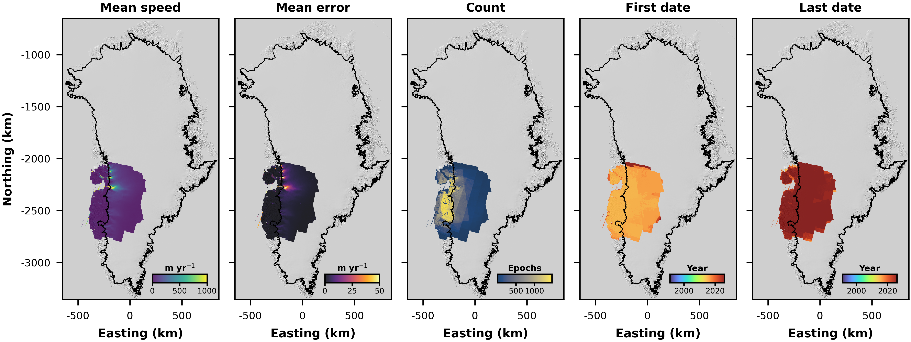
Fig. 4 Overview of the Greenland SHIFT data#
Sole, A. J. and Davison, B. J. 2026. SHeffield Ice Flow Tracker (SHIFT) velocity data: West Greenland ice surface velocity fields derived from intensity tracking of Sentinel-1 Synthetic Aperture Radar image pairs. [Online]. Available from: https://doi.org/10.15131/shef.data.33113009.v1.
Davison, B.J., Sole, A.J., Cowton, T.R., Lea, J.M., Slater, D.A., Fahrner, D. and Nienow, P.W., 2020. Subglacial drainage evolution modulates seasonal ice flow variability of three tidewater glaciers in southwest Greenland. Journal of Geophysical Research: Earth Surface, 125(9), p.e2019JF005492. DOI: https://doi.org/10.1029/2019JF005492.
PROMICE#
The PROMICE data provide 24-day (two consecutive Sentinel-1 cycles) averages of ice speed over Greenland derived from intensity tracking of Sentinel-1 image pairs from 2016 to 2026, with new 24-day averages added every 12 days. We use Edition 5 of the PROMICE mosaics here; these mosaics can be downloaded from the GEUS Dataverse repository. The PROMICE velocity processing pipeline is described in detail in Solgaard et al. (2021).
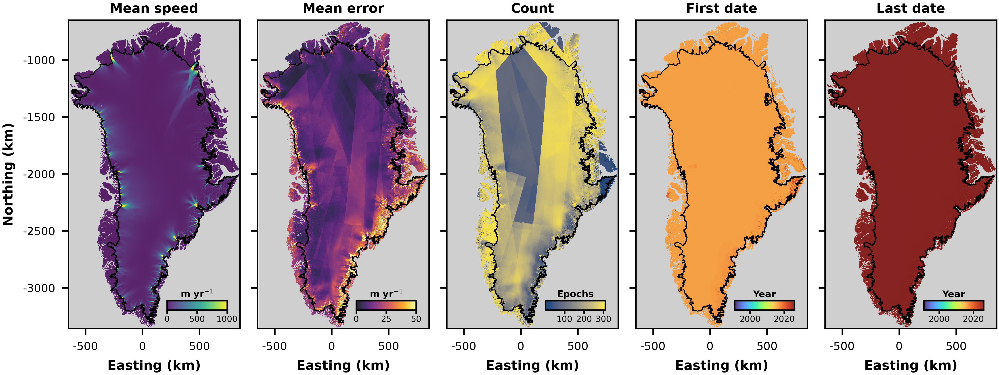
Fig. 5 Overview of the Greenland PROMICE data#
Solgaard, A., Kusk, A., Merryman Boncori, J.P., Dall, J., Mankoff, K.D., Ahlstr?m, A.P., Andersen, S.B., Citterio, M., Karlsson, N.B., Kjeldsen, K.K. and Korsgaard, N.J., 2021. Greenland ice velocity maps from the PROMICE project. Earth System Science Data, 13(7), pp.3491-3512. DOI: https://doi.org/10.5194/essd-13-3491-2021.
Solgaard, Anne Munck; Kusk, Anders, 2026, “Greenland Ice Velocity from Sentinel-1 Edition 5”, https://doi.org/10.22008/FK2/K70OPK, GEUS Dataverse, V6.
MEaSUREs monthly#
The MEaSUREs data provide monthly averages of ice speed over Greenland derived from a combination of Interferometric SAR (InSAR) and intensity tracking of Sentinel-1 image pairs from 2015 to 2024. The MEaSUREs velocity processing pipeline is described in detail in Joughin et al. (2018).
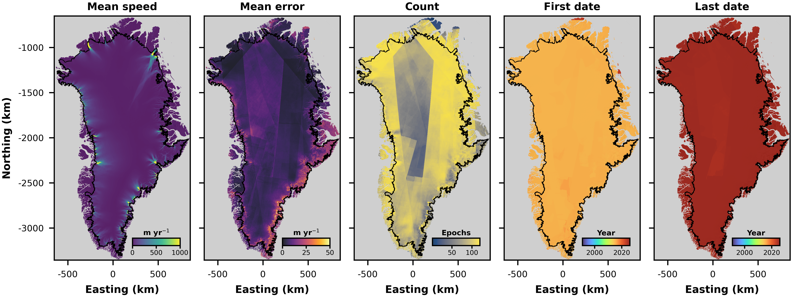
Fig. 6 Overview of the Greenland MEaSUREs monthly data.#
Joughin, I. (2023). MEaSUREs Greenland Monthly Ice Sheet Velocity Mosaics from SAR and Landsat. (NSIDC-0731, Version 5). [Data Set]. Boulder, Colorado USA. NASA National Snow and Ice Data Center Distributed Active Archive Center. https://doi.org/10.5067/EGKZX6FXXM4P. Date Accessed 04-21-2026.
Joughin, I., B. Smith, I. Howat, T. Scambos, and T. Moon. 2010. Greenland flow variability from icesheet-wide velocity mapping, Journal of Glaciology. 56. 415-430. https://doi.org/10.3189/002214310792447734.
Joughin, I., B. Smith, and I. Howat. 2018. Greenland Ice Mapping Project: ice flow velocity variation at sub-monthly to decadal timescales, The Cryosphere. 12. 2211-2227. https://doi.org/10.5194/tc-12-2211-2018.
MEaSUREs quarterly#
The MEaSUREs data provide quarterly averages of ice speed over Greenland derived from a combination of Interferometric SAR (InSAR) and intensity tracking of Sentinel-1 and TerraSAR-X/TanDEM-X imagery, plus feature tracking of optical imagery acquired by Landsat 8 and Landsat 9. The data are available from 1st December 2014 to 30th November 2024. The MEaSUREs velocity processing pipeline is described in detail in Joughin et al. (2023).
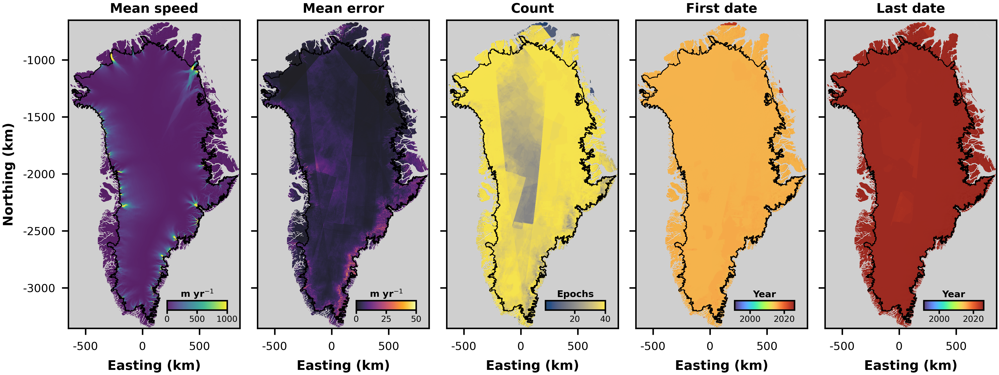
Fig. 7 Overview of the Greenland MEaSUREs quarterly data.#
Joughin, I. (2023). MEaSUREs Greenland Quarterly Ice Sheet Velocity Mosaics from SAR and Landsat. (NSIDC-0727, Version 5). [Data Set]. Boulder, Colorado USA. NASA National Snow and Ice Data Center Distributed Active Archive Center. https://doi.org/10.5067/V5KW64S63OSN. Date Accessed 04-21-2026.
Joughin, I., B. Smith, I. Howat, T. Scambos, and T. Moon. 2010. Greenland flow variability from icesheet-wide velocity mapping, Journal of Glaciology. 56. 415-430. https://doi.org/10.3189/002214310792447734.
Joughin, I., B. Smith, and I. Howat. 2018. Greenland Ice Mapping Project: ice flow velocity variation at sub-monthly to decadal timescales, The Cryosphere. 12. 2211-2227. https://doi.org/10.5194/tc-12-2211-2018.
MEaSUREs winter#
The MEaSUREs data provide ‘winter’ averages of ice speed over Greenland derived from Interferometric SAR (InSAR) data obtained by RADARSAT-1, ALOS, TerraSAR-X/TanDEM-X and Sentinel-1A and Sentinel-1B. The data are available for the 2000/2001, 2005-2010, 2012/2013, and 2014-2018 winters. The MEaSUREs velocity processing pipeline is described in detail in Joughin et al. (2015).
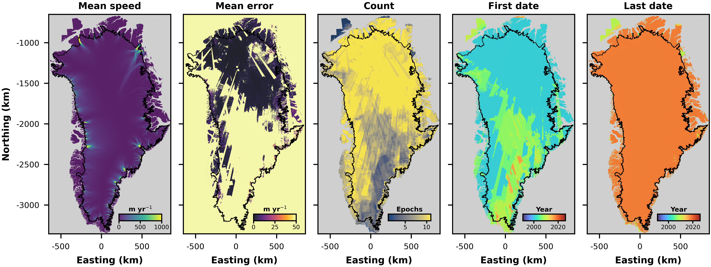
Fig. 8 Overview of the Greenland MEaSUREs winter data.#
Joughin, I., Smith, B., Howat, I. & Scambos, T. (2015). MEaSUREs Greenland Ice Sheet Velocity Map from InSAR Data. (NSIDC-0478, Version 2). [Data Set]. Boulder, Colorado USA. NASA National Snow and Ice Data Center Distributed Active Archive Center. https://doi.org/10.5067/OC7B04ZM9G6Q. Date Accessed 04-23-2026.
Joughin, I., B. Smith, I. Howat, T. Scambos, and T. Moon. 2010. Greenland flow variability from icesheet-wide velocity mapping, Journal of Glaciology. 56. 415-430. https://doi.org/10.3189/002214310792447734.
Joughin, I., B. Smith, and I. Howat. 2018. Greenland Ice Mapping Project: ice flow velocity variation at sub-monthly to decadal timescales, The Cryosphere. 12. 2211-2227. https://doi.org/10.5194/tc-12-2211-2018.
MEaSUREs annual#
The MEaSUREs data provide annual averages of ice speed over Greenland derived from a combination of Interferometric SAR (InSAR) and intensity tracking of Sentinel-1 and TerraSAR-X/TanDEM-X imagery, plus feature tracking of optical imagery acquired by Landsat 8 and Landsat 9. The data are available from 1st December 2014 to 30th November 2023. The MEaSUREs velocity processing pipeline is described in detail in Joughin et al. (2023).
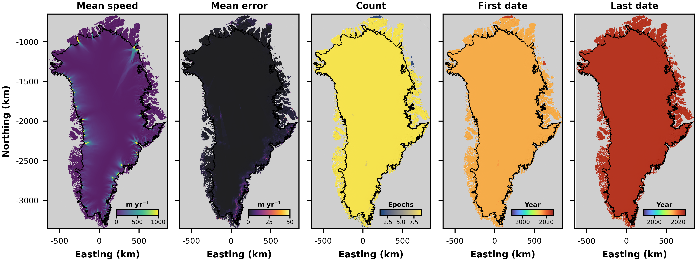
Fig. 9 Overview of the Greenland MEaSUREs annual data.#
Joughin, I. (2023). MEaSUREs Greenland Annual Ice Sheet Velocity Mosaics from SAR and Landsat. (NSIDC-0725, Version 5). [Data Set]. Boulder, Colorado USA. NASA National Snow and Ice Data Center Distributed Active Archive Center. https://doi.org/10.5067/USBL3Z8KF9C3. Date Accessed 04-21-2026.
Joughin, I., B. Smith, I. Howat, T. Scambos, and T. Moon. 2010. Greenland flow variability from icesheet-wide velocity mapping, Journal of Glaciology. 56. 415-430. https://doi.org/10.3189/002214310792447734.
Joughin, I., B. Smith, and I. Howat. 2018. Greenland Ice Mapping Project: ice flow velocity variation at sub-monthly to decadal timescales, The Cryosphere. 12. 2211-2227. https://doi.org/10.5194/tc-12-2211-2018.
ITS_LIVE Annual#
The ITS_LIVE annual data provide annual (calendar year) averages of ice speed over Greenland derived from feature tracking applied to a range of satellite missions from 1985 to 2024. The ITS_LIVE velocity processing pipeline is described in Gardner et al. (2025) and Lei et al. (2022) and the mosaics are available to download from the ITS_LIVE website.
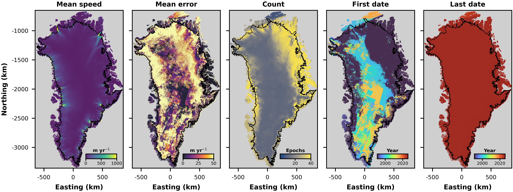
Fig. 10 Overview of the Greenland ITS_LIVE annual data.#
Gardner, A.S., Greene, C.A., Kennedy, J.H., Fahnestock, M.A., Liukis, M., L?pez L.A., Lei, Y., Scambos, T.A. and Dehecq, A., 2025. ITS_LIVE global glacier velocity data in near-real time. The Cryosphere, 19(9), pp.3517-3533. DOI: https://doi.org/10.5194/tc-19-3517-2025.
Gardner, A. S., Fahnestock, M. & Scambos, T. (2022). MEaSUREs ITS_LIVE Regional Glacier and Ice Sheet Surface Velocities. (NSIDC-0776, Version 1). [Data Set]. Boulder, Colorado USA. NASA National Snow and Ice Data Center Distributed Active Archive Center. https://doi.org/10.5067/6II6VW8LLWJ7. Date Accessed 08-17-2026.
Mouginot Annual#
The Mouginot annual data provide annual (July through June) averages of ice speed over Greenland derived from feature tracking applied to a range of satellite missions from 1972 to 2017. The velocity processing pipeline used to produce the mosaics is described in Mouginot et al. (2017) and the mosaics can be accessed at: 1972-1990, 1991-2000, 2001-2010, and 2010-2017.
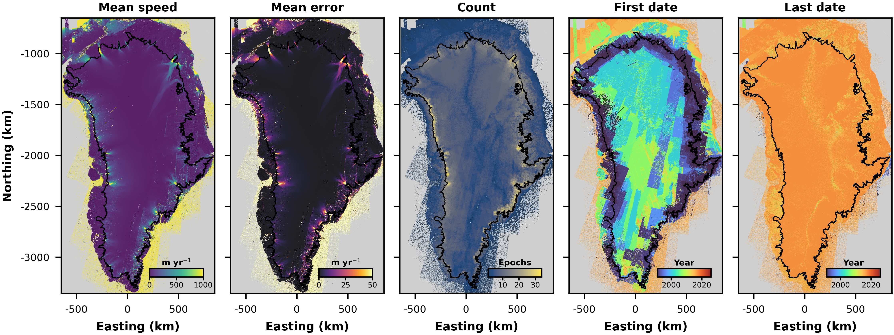
Fig. 11 Overview of the Greenland Mouginot annual data.#
Mouginot, J., Rignot, E., Scheuchl, B. and Millan, R., 2017. Comprehensive annual ice sheet velocity mapping using Landsat-8, Sentinel-1, and RADARSAT-2 data. Remote Sensing, 9(4), p.364. DOI: https://doi.org/10.3390/rs9040364.
ENVEO Annual#
The ENVEO annual data provide annual (October through September) averages of ice speed over Greenland derived from a combination of SAR interferometry and intensity and coherence tracking applied to Sentinel-1 image pairs acquired during 2014 to 2020. The velocity processing pipeline used to produce the mosaics is described in Wuite et al. (2026) and the mosaics can be accessed here.
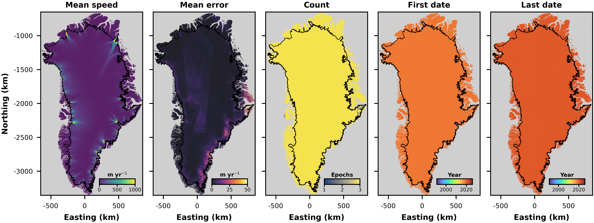
Fig. 12 Overview of the Greenland ENVEO annual data.#
Copernicus Climate Change Service, Climate Data Store (2020): Ice sheet velocity for Antarctica and Greenland derived from satellite observations. Copernicus Climate Change Service (C3S) Climate Data Store (CDS), DOI: 10.24381/cds.0b96b838 (Accessed on 26-Apr-2026).
ESA CCI Winter#
The ESA CCI Winter data provide winter measurements (from varying months) of ice speed over Greenland derived from RADARSAT and Sentinel-1 image pairs acquired during 2013 to 2018. The mosaics can be accessed at: 2013-2014, 2014-2015, 2015-2016, 2016-2017 and 2017-2018.
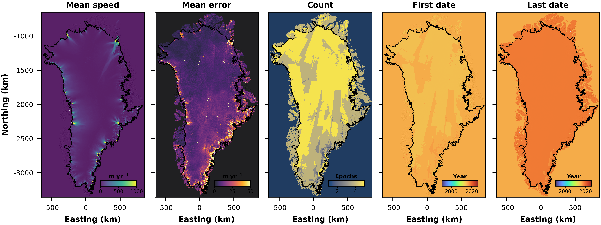
Fig. 13 Overview of the ESA CCI Winter data.#
ESA Greenland Ice Sheet CCI project team (2018): ESA Greenland Ice Sheet Climate Change Initiative (Greenland_Ice_Sheet_cci): Greenland Ice Velocity Map, Winter 2017-2018, v1.0. Centre for Environmental Data Analysis, 16/04/2026. https://catalogue.ceda.ac.uk/uuid/eaed9fba86c44e9c854dfbdec9d16b99
ESA CCI ERS-1 (1991-1992)#
The ESA CCI ERS-1 (1991-1992) data provide winter measurements of ice speed over Greenland’s northern and northwest basins, derived from intensity tracking of ERS-1 Ice phase (3-day repeat) data acquired between 29th December 1991 and 22nd March 1992. The data can be accessed from ESA Greenland Ice Sheet CCI project team (2016).
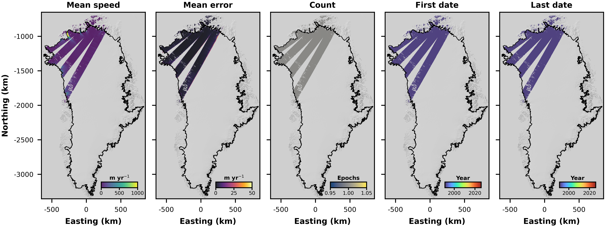
Fig. 14 Overview of the ESA CCI ERS-1 (1991-1992) data.#
ESA Greenland Ice Sheet CCI project team (2016): ESA Greenland Ice Sheet Climate Change Initiative (Greenland_Ice_Sheet_cci): Ice Velocity data for the Greenland Northern Drainage basin from ERS-1 for winter 1991-1992, v1.1 (June 2016 release). Centre for Environmental Data Analysis, 16/04/2026. https://catalogue.ceda.ac.uk/uuid/e4f39152bc50466f8887bd2a343cac93
ESA CCI ERS-2 (1995-1996)#
The ESA CCI ERS-2 (1995-1996) data provide winter measurements of ice speed over Greenland’s margin, derived from intensity tracking of ERS-2 data acquired between 3rd September 1995 and 29th March 1996. The data can be accessed from ESA Greenland Ice Sheet CCI project team (2016).
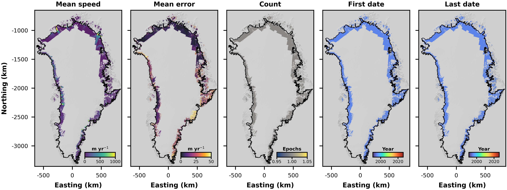
Fig. 15 Overview of the ESA CCI ERS-2 (1995-1996) data.#
ESA Greenland Ice Sheet CCI project team (2016): ESA Greenland Ice Sheet Climate Change Initiative (Greenland_Ice_Sheet_cci): Ice Velocity data for the Greenland Margin from ERS-2 for winter 1995-1996, v1.1 (June 2016 release). Centre for Environmental Data Analysis, 16/04/2026. https://catalogue.ceda.ac.uk/uuid/0b23b3c771db4fff8958196432d978cb
ESA CCI ALOS-PALSAR#
The ESA CCI ALOS-PALSAR data provide winter measurements of ice speed over Greenland’s margin, derived from intensity tracking of images acquired using the PALSAR instrument on the ALOS satellite between 20th December 2016 and 17th March 2011. The data can be accessed from ESA Greenland Ice Sheet CCI project team (2016).
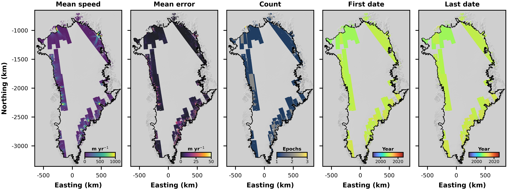
Fig. 16 Overview of the ESA CCI ALOS-PALSAR data.#
ESA Greenland Ice Sheet CCI project team (2016): ESA Greenland Ice Sheet Climate Change Initiative (Greenland_Ice_Sheet_cci): Ice Velocity data for the Greenland Margin from the PALSAR instrument for 2006-2011, v1.1 (June 2016 version). Centre for Environmental Data Analysis, 16/04/2026. https://catalogue.ceda.ac.uk/uuid/84b5cf8380894d719b61deac5abf3bae
ESA CCI ERS-1/2 & Envisat#
The ESA CCI ERS-1/2 & Envisat data provide measurements of ice speed for Hagen Brae, Helheim Glacier, Jakobshavn Isbrae, Kangerlussuaq Glacier, Petermann Glacier, Storstrommen, Upernavik Isstrom and Zachariae Isstrom/79 North Glacier. The measurements have been derived from intensity tracking of ERS-1, ERS-2 and Envisat data acquired between 1991 and 2010 (observation periods vary between glaciers). Upernavik Isstrom also contains velocity estimates derived from PALSAR imagery. The data for each basin can be accessed from: Jakobshavn Isbrae, Petermann Glacier, Kangerlussuaq Glacier, Helheim Glacier, Hagen Brae, Storstrommen Glacier, Zachariae and 79 North Glacier, and Upernavik Isstrom.
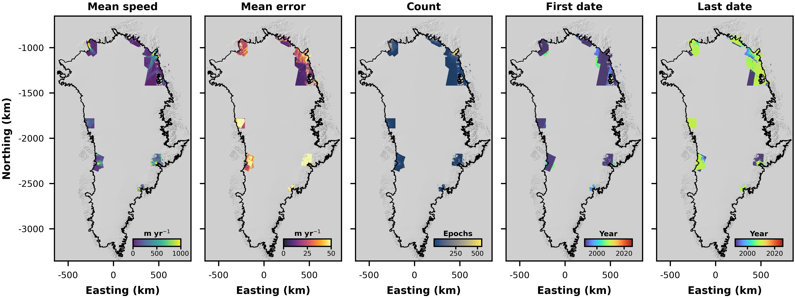
Fig. 17 Overview of the ESA CCI ERS-1/2 & Envisat data.#
ESA Greenland Ice Sheet CCI project team (2018): ESA Greenland Ice Sheet Climate Change Initiative (Greenland_Ice_Sheet_cci): Ice Velocity time series for the Jakobshavn glacier from ERS-1, ERS2 and ENVISAT data for 1992-2010, v1.2. Centre for Environmental Data Analysis, 16/04/2026. https://catalogue.ceda.ac.uk/uuid/a0d9764a3068439b997c42928ef739d2
ESA Greenland Ice Sheet CCI project team (2018): ESA Greenland Ice Sheet Climate Change Initiative (Greenland_Ice_Sheet_cci): Ice Velocity time series for the Petermann glacier from ERS-1, ERS-2 and Envisat data for 1991-2010, v1.1. Centre for Environmental Data Analysis, 16/04/2026. https://catalogue.ceda.ac.uk/uuid/22254b5608ab430fa360d0ff7e71c34e
ESA Greenland Ice Sheet CCI project team (2018): ESA Greenland Ice Sheet Climate Change Initiative (Greenland_Ice_Sheet_cci): Ice Velocity time series for the Kangerlussuaq glacier from ERS-1, ERS-2, Envisat for 1992-2008, v1.0. Centre for Environmental Data Analysis, 16/04/2026. https://catalogue.ceda.ac.uk/uuid/723067f77b8b43609079d721e3b4a3c7
ESA Greenland Ice Sheet CCI project team (2018): ESA Greenland Ice Sheet Climate Change Initiative (Greenland_Ice_Sheet_cci): Ice Velocity time series for the Helheim glacier from ERS-1, ERS-2 and Envisat data for 1996-2010, v1.1. Centre for Environmental Data Analysis, 16/04/2026. https://catalogue.ceda.ac.uk/uuid/17767027aa484505b7b732aee6619c74
ESA Greenland Ice Sheet CCI project team (2018): ESA Greenland Ice Sheet Climate Change Initiative (Greenland_Ice_Sheet_cci): Ice Velocity time series for the Hagen glacier from ERS-1, ERS-2 and Envisat data for 1991-2010, v1.1. Centre for Environmental Data Analysis, 16/04/2026. https://catalogue.ceda.ac.uk/uuid/27fc79c6e65f4302a18ec9788605c246
ESA Greenland Ice Sheet CCI project team (2018): ESA Greenland Ice Sheet Climate Change Initiative (Greenland_Ice_Sheet_cci): Ice Velocity time series of the Storstrommen glacier from ERS-1, ERS-2 and Envisat data for 1991-2010, v1.1. Centre for Environmental Data Analysis, 16/04/2026. https://catalogue.ceda.ac.uk/uuid/8381d3f3998143fd9b53c7086b7061e3
ESA Greenland Ice Sheet CCI project team (2018): ESA Greenland Ice Sheet Climate Change Initiative (Greenland_Ice_Sheet_cci): Ice Velocity time series for the Zachariae and 79Fjord area from ERS-1, ERS-2 and Envisat data for 1991-2011, v1.1. Centre for Environmental Data Analysis, 16/04/2026. https://catalogue.ceda.ac.uk/uuid/2457272c747f4d6ca33cb40833bd9cc2
ESA Greenland Ice Sheet CCI project team (2018): ESA Greenland Ice Sheet Climate Change Initiative (Greenland_Ice_Sheet_cci): Ice Velocity time series for the Upernavik glacier from ERS-1, ERS-2, Envisat and PALSAR data for 1992-2010, v1.2. Centre for Environmental Data Analysis, 16/04/2026. https://catalogue.ceda.ac.uk/uuid/8d475d7d92894765ad1ddda16de0e610
ESA CCI CSK#
The ESA CCI CSK data provide ice speed measurements of Jakobshavn Isbrae, derived from intensity tracking of 4-day repeat images acquired by COSMO-SkyMed between 2nd June 2012 and 25th December 2014. The data can be accessed from ESA Greenland Ice Sheet CCI project team (2018).
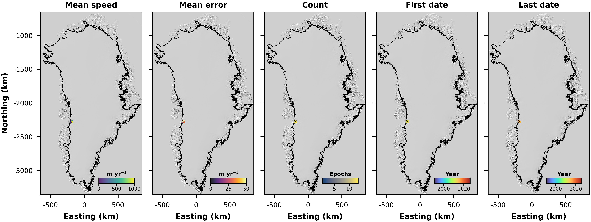
Fig. 18 Overview of the ESA CCI CSK data.#
ESA Greenland Ice Sheet CCI project team (2018): ESA Greenland Ice Sheet Climate Change Initiative (Greenland_Ice_Sheet_cci): Ice Velocity time series for the Jakobshavn Glacier from COSMO-SkyMed for 2012-2014, v1.0. Centre for Environmental Data Analysis, 16/04/2026. https://catalogue.ceda.ac.uk/uuid/2e54b40f184b44c797db36e192d2b679
ESA CCI Sentinel-2#
The ESA CCI Sentinel-2 data provide ice speed measurements of 79 North Glacier, Docker Smith, Hagen Brae, Helheim Glacier, Jakobshavn Isbrae, Kangerlussuaq Glacier, Petermann Glacier, Upernavik Isstrom and Zachariae Isstrom. The measurements have been derived from intensity tracking of Sentinel-2 image pairs acquired in 2016 and 2017 (periods vary between glaciers). The data for each basin can be accessed from: Petermann Glacier, Kangerlussuaq Glacier, Jakobshavn Isbrae, Helehim Isbrae, Zachariae Isstrom, Hagen Brae, Docker Smith, 79 North Glacier, and Upernavik Isstrom.
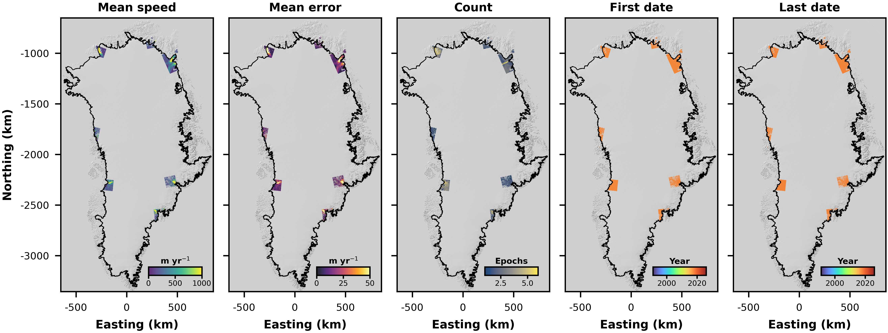
Fig. 19 Overview of the ESA CCI Sentinel-2 data.#
ESA Greenland Ice Sheet CCI project team (2019): ESA Greenland Ice Sheet Climate Change Initiative (Greenland_Ice_Sheet_cci): Optical ice velocity of the Petermann Glacier between 2017-05-01 and 2017-09-14, generated using Sentinel-2 data, v1.1. Centre for Environmental Data Analysis, 16/04/2026. https://catalogue.ceda.ac.uk/uuid/94f3670150de4bac90773806e26646f2
ESA Greenland Ice Sheet CCI project team (2018): ESA Greenland Ice Sheet Climate Change Initiative (Greenland_Ice_Sheet_cci): Optical ice velocity of the Kangerlussuaq Glacier between 2017-07-21 and 2017-08-20, generated using Sentinel-2 data, v1.1. Centre for Environmental Data Analysis, 16/04/2026. https://catalogue.ceda.ac.uk/uuid/aae643e1a7614c24b6b604dea82cad93
ESA Greenland Ice Sheet CCI project team (2018): ESA Greenland Ice Sheet Climate Change Initiative (Greenland_Ice_Sheet_cci): Optical ice velocity of the Jakobshavn Glacier between 2017-06-03 and 2017-09-08, generated using Sentinel-2 data, v1.1. Centre for Environmental Data Analysis, 16/04/2026. https://catalogue.ceda.ac.uk/uuid/cfe3102659f34d33b123b2a0043e4068
ESA Greenland Ice Sheet CCI project team (2019): ESA Greenland Ice Sheet Climate Change Initiative (Greenland_Ice_Sheet_cci): Optical ice velocity of the Helheim Glacier between 2017-05-01 and 2017-08-29, generated using Sentinel-2 data, v1.1. Centre for Environmental Data Analysis, 16/04/2026. https://catalogue.ceda.ac.uk/uuid/1e3fcdc14e2246c69fc54f0e1fe7a6ca
ESA Greenland Ice Sheet CCI project team (2019): ESA Greenland Ice Sheet Climate Change Initiative (Greenland_Ice_Sheet_cci): Optical ice velocity of the Zachariae Glacier between 2017-06-25 and 2017-08-10, generated using Sentinel-2 data, v1.1. Centre for Environmental Data Analysis, 16/04/2026. https://catalogue.ceda.ac.uk/uuid/ada968fd392d49fbbb07ac84eeb23ac6
ESA Greenland Ice Sheet CCI project team (2018): ESA Greenland Ice Sheet Climate Change Initiative (Greenland_Ice_Sheet_cci): Optical ice velocity of the Hagen Glacier between 2017-06-30 and 2017-08-14, generated using Sentinel-2 data, v1.1. Centre for Environmental Data Analysis, 16/04/2026. https://catalogue.ceda.ac.uk/uuid/e7fa45e785a64481960c3b140038c948
ESA Greenland Ice Sheet CCI project team (2019): ESA Greenland Ice Sheet Climate Change Initiative (Greenland_Ice_Sheet_cci): Optical ice velocity of the D?cker Smith Glacier between 2016-05-08 and 2016-05-18, generated using Sentinel-2 data, v1.0. Centre for Environmental Data Analysis, 16/04/2026. https://catalogue.ceda.ac.uk/uuid/88d02eb5a6c14952aa88028894d8a69c
ESA Greenland Ice Sheet CCI project team (2018): ESA Greenland Ice Sheet Climate Change Initiative (Greenland_Ice_Sheet_cci): Optical ice velocity of the 79Fjord Glacier between 2017-06-25 and 2017-08-10, generated using Sentinel-2 data, v1.1. Centre for Environmental Data Analysis, 16/04/2026. https://catalogue.ceda.ac.uk/uuid/f31e8e988c4144bebe13892b53d08e42
ESA Greenland Ice Sheet CCI project team (2018): ESA Greenland Ice Sheet Climate Change Initiative (Greenland_Ice_Sheet_cci): Optical ice velocity of the Upernavik Glacier between 2017-07-15 and 2017-08-14, generated using Sentinel-2 data, v1.1. Centre for Environmental Data Analysis, 16/04/2026. https://catalogue.ceda.ac.uk/uuid/84faf575c8e841a3a16476b05cbd657d
ESA CCI Sentinel-1#
The ESA CCI Sentinel-1 data provide ice speed measurements of 79 North Glacier, Storstrommen, Hagen Brae, Helheim Glacier, Jakobshavn Isbrae, Kangerlussuaq Glacier, Petermann Glacier, Upernavik Isstrom and Zachariae Isstrom. The measurements have been derived from intensity tracking of Sentinel-1 image pairs acquired in 2014 and 2017 (periods vary between glaciers). The data for each basin can be accessed from: Petermann Glacier, Kangerlussuaq Glacier, Jakobshavn Isbrae, Helehim Isbrae, Zachariae Isstrom, Hagen Brae, Storstrommen, 79 North Glacier, and Upernavik Isstrom.
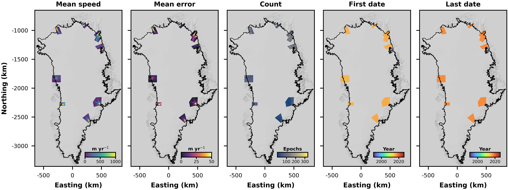
Fig. 20 Overview of the ESA CCI Sentinel-1 data.#
ESA Greenland Ice Sheet CCI project team (2019): ESA Greenland Ice Sheet Climate Change Initiative (Greenland_Ice_Sheet_cci): Ice Velocity time series for the Petermann Glacier for 2015-2017 from Sentinel-1 data, v1.1. Centre for Environmental Data Analysis, 16/04/2026. https://catalogue.ceda.ac.uk/uuid/81332b9a10f14bda8a1a83b6463bb6de
ESA Greenland Ice Sheet CCI project team (2019): ESA Greenland Ice Sheet Climate Change Initiative (Greenland_Ice_Sheet_cci): Ice Velocity time series for the Kangerlussuaq Glacier for 2015-2017 from Sentinel-1, v1.1. Centre for Environmental Data Analysis, 16/04/2026. https://catalogue.ceda.ac.uk/uuid/925e3f0e807243e2936cc492f5207af6
ESA Greenland Ice Sheet CCI project team (2019): ESA Greenland Ice Sheet Climate Change Initiative (Greenland_Ice_Sheet_cci): Ice Velocity time series for the Jakobshavn Glacier for 2014-2017 from Sentinel-1 data, v1.1. Centre for Environmental Data Analysis, 16/04/2026. https://catalogue.ceda.ac.uk/uuid/e1c0c34e0cc942898b3626efd1dcc095
ESA Greenland Ice Sheet CCI project team (2019): ESA Greenland Ice Sheet Climate Change Initiative (Greenland_Ice_Sheet_cci): Ice Velocity time series for the Helheim Glacier for 2015-2017 from Sentinel-1 data, v1.1. Centre for Environmental Data Analysis, 16/04/2026. https://catalogue.ceda.ac.uk/uuid/0e289294f2c141bca545cd9d7fcb62d0
ESA Greenland Ice Sheet CCI project team (2019): ESA Greenland Ice Sheet Climate Change Initiative (Greenland_Ice_Sheet_cci): Ice Velocity time series for the Zachariae Glacier for 2015-2017 from Sentinel-1 data, v1.1. Centre for Environmental Data Analysis, 16/04/2026. https://catalogue.ceda.ac.uk/uuid/e3dbdc32f7b6476e949d52d8d3990205
ESA Greenland Ice Sheet CCI project team (2019): ESA Greenland Ice Sheet Climate Change Initiative (Greenland_Ice_Sheet_cci): Ice Velocity time series for the Hagen Glacier for 2015-2017 from Sentinel-1 data, v1.1. Centre for Environmental Data Analysis, 16/04/2026. https://catalogue.ceda.ac.uk/uuid/5c9935b8b8854baeb7a256446293c03b
ESA Greenland Ice Sheet CCI project team (2019): ESA Greenland Ice Sheet Climate Change Initiative (Greenland_Ice_Sheet_cci): Ice Velocity time series for the Storstroemmen Glacier for 2015-2017 from Sentinel-1 data, v1.1. Centre for Environmental Data Analysis, 16/04/2026. https://catalogue.ceda.ac.uk/uuid/1dd4c30a78d84e628cd8097bae3148fd
ESA Greenland Ice Sheet CCI project team (2019): ESA Greenland Ice Sheet Climate Change Initiative (Greenland_Ice_Sheet_cci): Ice Velocity time series for the 79-Fjord Glacier for 2015-2017 from Sentinel-1 data, v1.1. Centre for Environmental Data Analysis, 16/04/2026. https://catalogue.ceda.ac.uk/uuid/41e2300068b44fa190f24272dc08dcd0
ESA Greenland Ice Sheet CCI project team (2019): ESA Greenland Ice Sheet Climate Change Initiative (Greenland_Ice_Sheet_cci): Ice Velocity time series for the Upernavik Glacier for 2014-2017 from Sentinel-1 data, v1.1. Centre for Environmental Data Analysis, 16/04/2026. https://catalogue.ceda.ac.uk/uuid/ef5c6596cae548c6aea9dea181c7624c
Antarctica Data#
There are 17 Contributing Datasets for Antarctica, which are summarised in this table:
Table 2. Datasets contributing to the Antarctic Ice Sheet unified dataset. Valid as of 30th July 2026
Source Dataset |
Start Date |
End Date |
Epochs |
Sep. (days) |
Resolution (m) |
Citation |
|---|---|---|---|---|---|---|
ENVEO ALOSa |
29/09/2009 |
17/02/2011 |
2 |
47 |
50 |
[1] |
ENVEO ERSa |
11/01/1992 |
10/11/1999 |
13 |
2 |
500 |
[2, 3] |
ENVEO Sentinel-1 PIGa |
10/10/2014 |
21/08/2019 |
402 |
13 |
200 |
[4] |
ENVEO TSXa |
26/06/2007 |
11/12/2016 |
125 |
12 |
50 |
[1] |
ENVEO TSX PALSARa |
02/07/2010 |
09/03/2012 |
1 |
617 |
50 |
[1] |
ENVEO TSX Sentinel-1a |
31/10/2015 |
11/12/2016 |
1 |
408 |
50 |
[1] |
ENVEO monthly |
01/10/2014 |
31/12/2021 |
87 |
30 |
200 |
[4] |
ESA CCI annual |
01/04/2021 |
31/03/2024 |
3 |
365 |
200 |
[5] |
ITS LIVE annual |
01/01/1985 |
31/12/2024 |
40 |
365 |
120 |
[6, 7] |
Joughin Sentinel-1a |
01/04/2015 |
29/09/2020 |
22 |
90 |
500 |
[8] |
Joughin TSXa |
06/02/2009 |
24/12/2015 |
13 |
106 |
500 |
[8] |
Li Tottena |
01/01/1963 |
31/12/1989 |
3 |
365 |
1000 |
[8] |
MEaSUREs ASE |
01/01/1996 |
31/12/2012 |
10 |
365 |
450 |
[64], [10, 11] |
MEaSUREs annual |
01/07/2000 |
30/06/2025 |
21 |
365 |
1000 |
[12, 13] |
MEaSUREs multiyear |
01/07/1995 |
30/06/2022 |
4 |
730 |
450 |
[14, 15] |
SHIFTc |
25/11/2014 |
20/01/2026 |
2033 |
13 |
200 |
[16, 17] |
SID annuald |
01/01/2015 |
31/12/2024 |
10 |
365 |
250 |
[18, 19] |
a Error of all epochs and velocity components assumed to be 5%
b Error calculated by scaling the velocity magnitude error by the proportional contribution of each velocity component to the velocity magnitude.
c Error is provided as a scalar value defined as the standard deviation of apparent ice motion over bedrock areas. If provided error is NaN for a given epoch, the error is assumed to be 5%.
d No velocity component data provided, so are assumed to be NaN.
Citations: [1] Rott et al. (2018); [2] Rott et al. (2011); [3] Wuite et al. (2015); [4] Wuite et al. (2026); [5] Copernicus Climate Change Service, Climate Data Store (2020); [6] Gardner et al. (2025); [7] Gardner et al. (2022); [8] Joughin et al. (2021); [9] Li et al. (2023); [10] Rignot et al. (2014); [11] Mouginot et al. (2014); [12, 13] Mouginot et al. (2017a; 2017b); [14, 15] Rignot et al. (2022a; 2022b); [16] Davison et al. (2020); [17] Davison & Sole (2026); [18] Hogg et al. (2025); [19] Davison et al. (2023)
The sections below provide a brief overview of each of these Contributing Datasets.
SHIFT#
The SHIFT data provide 6- and 12-day snapshots of ice speed over the Antarctic Peninsula derived from feature intensity of Sentinel-1 image pairs from 2014 to 2026. The SHIFT processing pipeline is described in detail in the SHIFT Documentation Page.
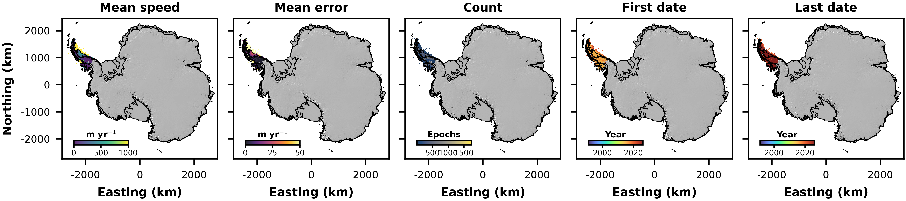
Fig. 21 Overview of the Antarctic SHIFT data.#
Davison, B. J. and Sole, A. J. 2026. SHeffield Ice Flow Tracker (SHIFT) velocity data: Antarctic Peninsula ice surface velocity fields derived from intensity tracking of Sentinel-1 Synthetic Aperture Radar image pairs. [Online]. Available from: https://doi.org/10.15131/shef.data.33113111.v1
Davison, B.J., Sole, A.J., Cowton, T.R., Lea, J.M., Slater, D.A., Fahrner, D. and Nienow, P.W., 2020. Subglacial drainage evolution modulates seasonal ice flow variability of three tidewater glaciers in southwest Greenland. Journal of Geophysical Research: Earth Surface, 125(9), p.e2019JF005492. DOI: https://doi.org/10.1029/2019JF005492.
ENVEO monthly#
The ENVEO monthly data provide monthly averages of ice speed over the Antarctic margin derived from intensity and coherence tracking of Sentinel-1 image pairs from 2014 to 2021. The ENVEO velocity processing pipeline is described in detail in Wuite et al. (2026), and the mosaics can be downloaded from the ENVEO cryoportal.
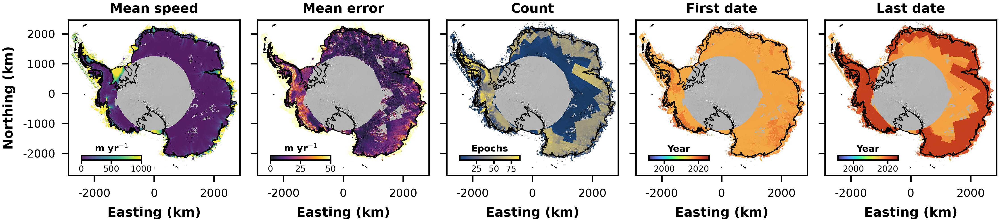
Fig. 22 Overview of the ENVEO monthly data.#
Wuite, J., Nagler, T., Hetzenecker, M. and Rott, H., 2026. Ten years of polar ice velocity mapping using Copernicus Sentinel-1. Remote Sensing of Environment, 332, p.115092. DOI: https://doi.org/10.1016/j.rse.2025.115092
ENVEO (Pine Island)#
The ENVEO (Pine Island) data provide 6- and 12-day snapshots of ice speed over Pine Island Glacier derived from intensity and coherence tracking of Sentinel-1 image pairs from 2014 to 2019. The ENVEO velocity processing pipeline is described in detail in Wuite et al. (2026), and the image pair data can be downloaded from the ENVEO cryoportal.
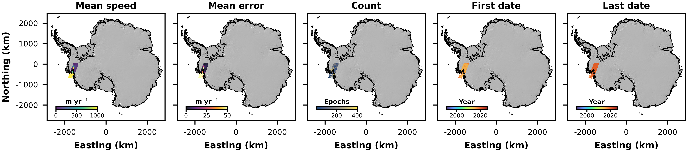
Fig. 23 Overview of the ENVEO Pine Island data.#
Wuite, J., Nagler, T., Hetzenecker, M. and Rott, H., 2026. Ten years of polar ice velocity mapping using Copernicus Sentinel-1. Remote Sensing of Environment, 332, p.115092. DOI: https://doi.org/10.1016/j.rse.2025.115092
ENVEO ERS#
The ENVEO ERS data provide estimates of ice speed covering the Larsen-B Embayment region, Ferrigno Ice Shelf area, Rutford Ice Stream and the Amundsen Sea Embayment region of Antarctica. The measurements are provided at a range of temporal resolutions - ranging from 8 days to 4 months during the period from 11th January 1992 to 11th November 1999. The measurements are derived from a combination of SAR interferometry and offset tracking of ERS-1 and ERS-2 imagery. The processing techniques used to derive these velocity estimates are described in Rott et al. (2011), and Wuite et al. (2015) and the data can be downloaded from the ENVEO cryoportal.
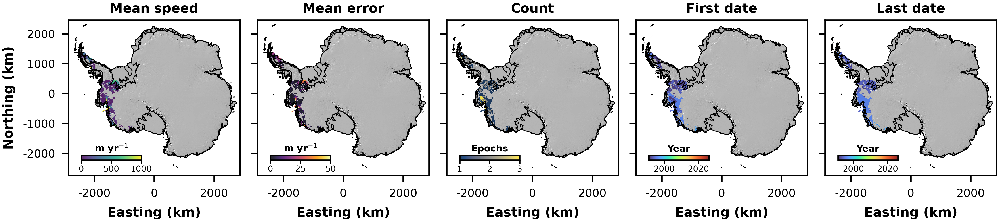
Fig. 24 Overview of the ENVEO ERS data.#
Rott, H., M?ller, F., Nagler, T. and Floricioiu, D., 2011. The imbalance of glaciers after disintegration of Larsen-B ice shelf, Antarctic Peninsula. The Cryosphere, 5(1), pp.125-134. DOI: https://doi.org/10.5194/tc-5-125-2011.
Wuite, J., Rott, H., Hetzenecker, M., Floricioiu, D., De Rydt, J., Gudmundsson, G.H., Nagler, T. and Kern, M., 2015. Evolution of surface velocities and ice discharge of Larsen B outlet glaciers from 1995 to 2013. The Cryosphere, 9(3), pp.957-969. DOI: https://doi.org/10.5194/tc-9-957-2015.
ENVEO TSX#
The ENVEO TSX data provide estimates of ice speed covering the Larsen-B Embayment region of the Antarctic Peninsula. The measurements are provided at a range of temporal resolutions - typically 11 or 22 days - during the period from 26th June 2007 to 12th December 2016. The measurements are derived from offset tracking of TerraSAR-X image pairs. The processing techniques used to derive these velocity estimates are described in Rott et al. (2018) and the data can be downloaded from the ENVEO cryoportal.
Fig. 25 Overview of the ENVEO TSX data.#
Rott, H., Abdel Jaber, W., Wuite, J., Scheiblauer, S., Floricioiu, D., Van Wessem, J.M., Nagler, T., Miranda, N. and Van Den Broeke, M.R., 2018. Changing pattern of ice flow and mass balance for glaciers discharging into the Larsen A and B embayments, Antarctic Peninsula, 2011 to 2016. The Cryosphere, 12(4), pp.1273-1291. DOI: https://doi.org/10.5194/tc-12-1273-2018.
ENVEO ALOS-PALSAR#
The ENVEO ALOS-PALSAR data provide estimates of ice speed covering the Larsen-B Embayment region of the Antarctic Peninsula from the 29th September 2009 to 13th November 2009 and the 2nd January 2011 to 17th February 2011. The measurements are derived from offset tracking of a combination of ALOS-PALSAR image pairs. The data can be downloaded from the ENVEO cryoportal.
Fig. 26 Overview of the ENVEO ALOS-PALSAR data.#
ENVEO TSX & Sentinel-1#
The ENVEO TSX & Sentinel-1 data provide estimates of ice speed covering the Larsen-B Embayment region of the Antarctic Peninsula from the 31st October 2015 to the 12th December 2016. The measurements are derived from offset tracking of TerraSAR-X image pairs with gaps filled using Sentinel-1 data. The processing techniques used to derive these velocity estimates are described in Rott et al. (2018) and the data can be downloaded from the ENVEO cryoportal.
Fig. 27 Overview of the ENVEO TSX & Sentinel-1 data.#
Rott, H., Abdel Jaber, W., Wuite, J., Scheiblauer, S., Floricioiu, D., Van Wessem, J.M., Nagler, T., Miranda, N. and Van Den Broeke, M.R., 2018. Changing pattern of ice flow and mass balance for glaciers discharging into the Larsen A and B embayments, Antarctic Peninsula, 2011 to 2016. The Cryosphere, 12(4), pp.1273-1291. DOI: https://doi.org/10.5194/tc-12-1273-2018.
ENVEO TSX & ALOS-PALSAR#
The ENVEO TSX & ALOS-PALSAR data provide estimates of ice speed covering the Larsen-B Embayment region of the Antarctic Peninsula from the 2nd July 2010 to the 10th March 2012. The measurements are derived from offset tracking of TerraSAR-X image pairs with gaps filled using ALOS-PALSAR data. The processing techniques used to derive these velocity estimates are described in Rott et al. (2018) and the data can be downloaded from the ENVEO cryoportal.
Fig. 28 Overview of the ENVEO TSX & ALOS-PALSAR data.#
Rott, H., Abdel Jaber, W., Wuite, J., Scheiblauer, S., Floricioiu, D., Van Wessem, J.M., Nagler, T., Miranda, N. and Van Den Broeke, M.R., 2018. Changing pattern of ice flow and mass balance for glaciers discharging into the Larsen A and B embayments, Antarctic Peninsula, 2011 to 2016. The Cryosphere, 12(4), pp.1273-1291. DOI: https://doi.org/10.5194/tc-12-1273-2018.
MEaSUREs multi-year#
The MEaSUREs multi-year data provide estimates of ice speed for all of Antarctica from July through June of the following multi-year periods: 1995-2001, 2007-2009, 2014-2017 and 2020-2022. The measurements are derived by applying phase analysis and speckle tracking to SAR data and by feature tracking of optical imagery from Landsat 8. The processing techniques used to derive these velocity estimates are described in Rignot et al. (2022) and the data can be downloaded from NSIDC (0761).
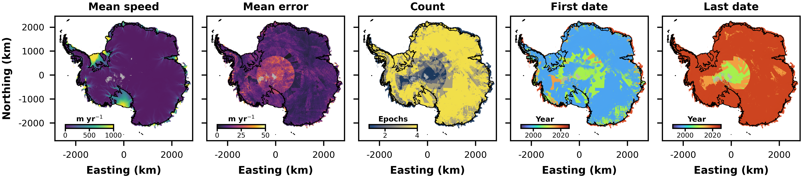
Fig. 29 Overview of the MEaSUREs multi-year data.#
Rignot, E., Mouginot, J., Scheuchl, B. and Jeong, S., 2022. Changes in Antarctic ice sheet motion derived from satellite radar interferometry between 1995 and 2022. Geophysical Research Letters, 49(23), p.e2022GL100141. DOI: https://doi.org/10.1029/2022GL100141.
Rignot, E., Scheuchl, B., Mouginot, J. & Jeong, S. (2022). MEaSUREs Multi-year Reference Velocity Maps of the Antarctic Ice Sheet. (NSIDC-0761, Version 1). [Data Set]. Boulder, Colorado USA. NASA National Snow and Ice Data Center Distributed Active Archive Center. https://doi.org/10.5067/FB851ZIZYX5O. Date Accessed 04-16-2026.
MEaSUREs annual#
The MEaSUREs annual data provide estimates of ice speed for all of Antarctica from July through June of the following years: 2000, 2005-2025. The measurements are derived by applying phase analysis and speckle tracking to SAR data and by feature tracking of optical imagery from Landsat 8. The processing techniques used to derive these velocity estimates are described in Mouginot et al. (2017) and the data can be downloaded from NSIDC (0720).
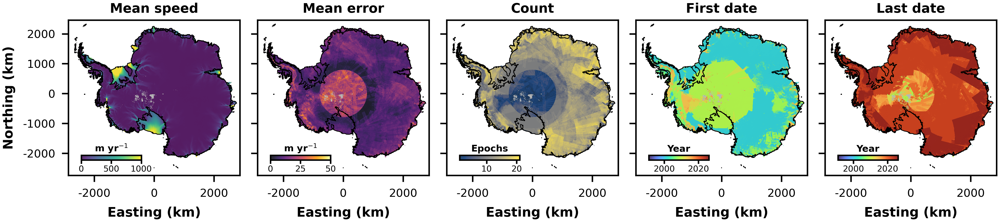
Fig. 30 Overview of the MEaSUREs annual data.#
Mouginot, J., Rignot, E., Scheuchl, B. and Millan, R., 2017. Comprehensive annual ice sheet velocity mapping using Landsat-8, Sentinel-1, and RADARSAT-2 data. Remote Sensing, 9(4), p.364. DOI: https://doi.org/10.3390/rs9040364.
Mouginot, J., Scheuchl, B. & Rignot, E. (2017). MEaSUREs Annual Antarctic Ice Velocity Maps. (NSIDC-0720, Version 1). [Data Set]. Boulder, Colorado USA. NASA National Snow and Ice Data Center Distributed Active Archive Center. https://doi.org/10.5067/9T4EPQXTJYW9. Date Accessed 04-16-2026.
MEaSUREs ASE#
The MEaSUREs ASE data provide annual (calendar year) estimates of ice speed for the Amundsen Sea Embayment from 1996, 2000, 2002 and 2006 to 2012. The measurements are derived from SAR interferometry on a range of platforms. The processing techniques used to derive these velocity estimates are described in Mouginot et al. (2014) and the data can be downloaded from NSIDC (0545).
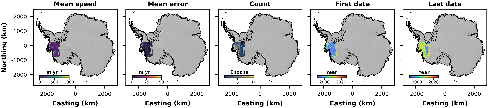
Fig. 31 Overview of the MEaSUREs ASE data.#
Mouginot, J., Rignot, E. and Scheuchl, B., 2014. Sustained increase in ice discharge from the Amundsen Sea Embayment, West Antarctica, from 1973 to 2013. Geophysical Research Letters, 41(5), pp.1576-1584. DOI: https://doi.org/10.1002/2013GL059069.
Rignot, E., Mouginot, J. & Scheuchl, B. (2014). MEaSUREs InSAR-Based Ice Velocity of the Amundsen Sea Embayment, Antarctica. (NSIDC-0545, Version 1). [Data Set]. Boulder, Colorado USA. NASA National Snow and Ice Data Center Distributed Active Archive Center. https://doi.org/10.5067/MEASURES/CRYOSPHERE/nsidc-0545.001. Date Accessed 04-16-2026.
ITS_LIVE Annual#
The ITS_LIVE annual data provide annual (calendar year) averages of ice speed over Antarctica derived from feature tracking applied to a range of satellite missions from 1985 to 2024. The ITS_LIVE velocity processing pipeline is described in Gardner et al. (2025) and Lei et al. (2022) and the mosaics are available to download from the ITS_LIVE website.
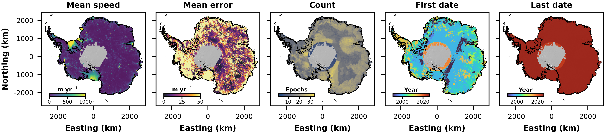
Fig. 32 Overview of the Antarctica ITS_LIVE annual data.#
Gardner, A.S., Greene, C.A., Kennedy, J.H., Fahnestock, M.A., Liukis, M., L?pez, L.A., Lei, Y., Scambos, T.A. and Dehecq, A., 2025. ITS_LIVE global glacier velocity data in near-real time. The Cryosphere, 19(9), pp.3517-3533. DOI: https://doi.org/10.5194/tc-19-3517-2025.
Gardner, A. S., Fahnestock, M. & Scambos, T. (2022). MEaSUREs ITS_LIVE Regional Glacier and Ice Sheet Surface Velocities. (NSIDC-0776, Version 1). [Data Set]. Boulder, Colorado USA. NASA National Snow and Ice Data Center Distributed Active Archive Center. https://doi.org/10.5067/6II6VW8LLWJ7. Date Accessed 08-17-2026.
ESA CCI Annual#
The ESA CCI Annual data provide annual (April through March) averages of ice speed over Antarctica derived from Sentinel-1 image pairs acquired during 2021 to 2024. The mosaics can be accessed through the Copernicus Climate Data Store.
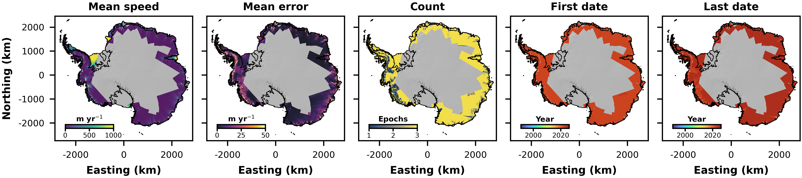
Fig. 33 Overview of the ESA CCI annual data.#
Wuite, J., (2026): Ice sheet velocity for Antarctica and Greenland derived from satellite observations. Copernicus Climate Change Service (C3S) Climate Data Store (CDS), DOI: 10.24381/cds.0b96b838 (Accessed on 26-Apr-2026)
SID Annual#
The SID (Satellite Ice Dynamics) annual data provide annual (January through December) averages of ice speed over Antarctica derived from Sentinel-1 image pairs acquired during 2015 to 2025. The mosaics can be accessed through the CEDA Archive.
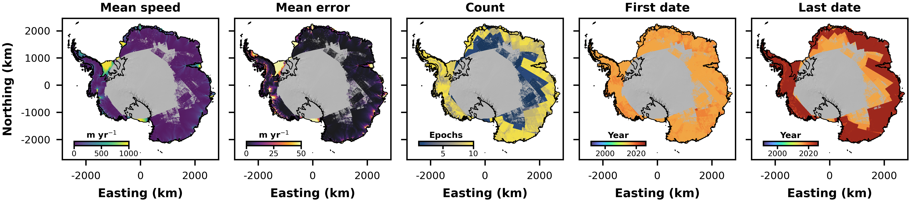
Fig. 34 Overview of the SID annual data.#
Hogg, A.E.; Davison, B.J.; Rigby, R.; Wallis, B.J.; Slater, R.A.W. (2025): EOCIS: Ice Sheet Velocity, V1. NERC EDS Centre for Environmental Data Analysis, 17 April 2025. doi:10.5285/c0b464b3da9845758cd33591e57c4abf. https://dx.doi.org/10.5285/c0b464b3da9845758cd33591e57c4abf
Davison, B.J., Hogg, A.E., Rigby, R., Veldhuijsen, S., van Wessem, J.M., van den Broeke, M.R., Holland, P.R., Selley, H.L. and Dutrieux, P., 2023. Sea level rise from West Antarctic mass loss significantly modified by large snowfall anomalies. Nature Communications, 14(1), p.1479. DOI: https://doi.org/10.1038/s41467-023-36990-3.
Joughin Sentinel-1 (Pine Island)#
The Sentinel-1 quarterly averages of Pine Island Glacier ice speed are available from 1st April 2015 to the 29th September 2020. These measurements are described in Joughin et al. (2021) and the data are available from the supplementary information of that paper.
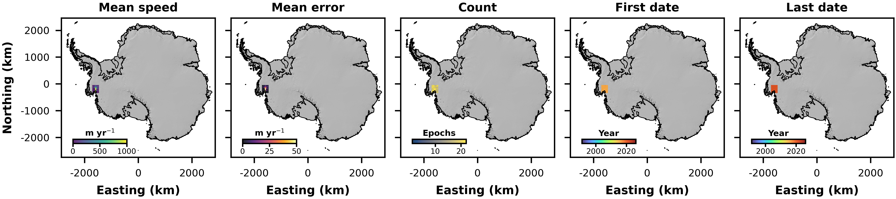
Fig. 35 Overview of the Joughin Sentinel-1 data over Pine Island Glacier.#
Joughin, I., Shapero, D., Smith, B., Dutrieux, P. and Barham, M., 2021. Ice-shelf retreat drives recent Pine Island Glacier speedup. Science Advances, 7(24), p.eabg3080. DOI: 10.1126/sciadv.abg3080.
Joughin TSX (Pine Island)#
The TerraSAR-X velocity estimates of Pine Island Glacier ice speed are available from 15th January 2009 to 15th January 2016 (dates are approximate). The time period over which the measurements were made was not provided with the data but described as a “range of several months”, so we have assumed a 6-month range here. These measurements are described in Joughin et al. (2021) and the data are available from the supplementary information of that paper.
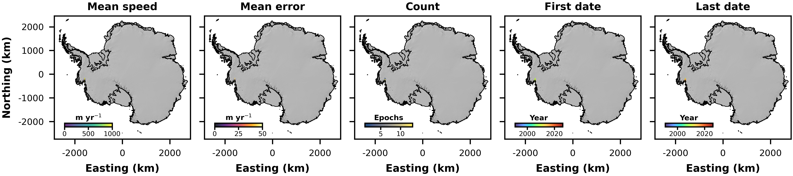
Fig. 36 Overview of the Joughin TerraSAR-X data over Pine Island Glacier.#
Joughin, I., Shapero, D., Smith, B., Dutrieux, P. and Barham, M., 2021. Ice-shelf retreat drives recent Pine Island Glacier speedup. Science Advances, 7(24), p.eabg3080. DOI: 10.1126/sciadv.abg3080.
Li (Totten)#
These velocity estimates only cover Totten Glacier. The measurements were derived from feature tracking of ARGON and Landsat-1&4 imagery. The measurements are available for the periods 1963-1973, 1973-1989 and 1989. Dates were not provided with the data so we have assumed calendar years. These measurements are described in Li et al. (2023). The link to the data provided in that paper did not work at the time of writing, but the authors shared the data on request.
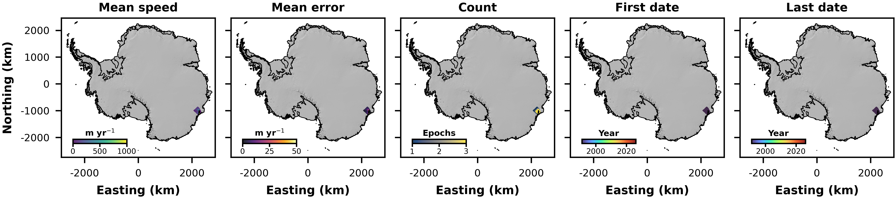
Fig. 37 Overview of the Li et al. data over Totten Glacier.#
Li, R., Cheng, Y., Chang, T., Gwyther, D.E., Forbes, M., An, L., Xia, M., Yuan, X., Qiao, G., Tong, X. and Ye, W., 2023. Satellite record reveals 1960s acceleration of Totten ice shelf in East Antarctica. Nature Communications, 14(1), p.4061. DOI: https://doi.org/10.1038/s41467-023-39588-x.
Summary#
Combined, these sources offer an extensive historical record of ice motion. For Greenland, the measurements span from July 1972 to the present, with epoch resolutions ranging from four days to one year. For the Antarctic Ice Sheet, the temporal record extends from 1963 to January 2026, with epoch resolutions ranging from two days to multiple years.
The data infrastructure is designed to accommodate ongoing data generation. Currently, only one Contributing Dataset for Greenland (PROMICE (Solgaard et al. 2021)) receives predictable, operational updates; these new data are automatically ingested into the Unified Dataset and made accessible via SHIVER with a delay of three days following data publication by PROMICE. Irregular updates from other sources (e.g., MEaSUREs, ITS_LIVE), as well as the integration of entirely new ice velocity products, will be incorporated periodically into future versions of the Unified Dataset.